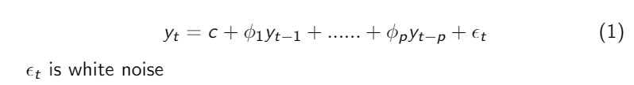
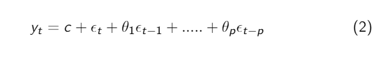

CS460 Project :Weather forecast by time series forecast method.
BY: Haraprasad Dhal(sps 18) and Ravi Prakash Singh(sps 18)
Github
Goals
- Our goal is to predict different quantities like average monthly temperature,rainfall of different location
- We will be using time series forecast method.
- We will try to do some changes or/and add something to these time series forecast method to improve the forecast.
Time Series
-
A time series is a series of data points indexed in time order. Most commonly, a time series is a sequence of observation taken at successive
equally spaced points in time.
e.g Daily Max and Min Temperature record
- Time series analysis comprises methods for analyzing time series data in order to extract meaningful statistics and other characteristics of the data.
- Time series forecasting is the use of a model to predict future values based on previously observed values.
Models:
- Auto regressive (AR) Model
- Integrated (I) Model
- Moving average(MR) Model
- Combination of these: autoregressive moving average (ARMA) and autoregressive integrated moving average (ARIMA) models
- ARIMAX
- SARIMA
- SARIMAX
ARIMA Model:
- AR MODEL AR(p): we forecast the variable of interest using a linear combination of predictors. In an autoregression model, we forecast the
variable of interest using a linear combination of past values of the variable.

- MA model MA(q):-Rather than using past values of the forecast variable in a regressio n, a moving average model uses past forecast errors.

ARIMA :
An ARIMA model is characterized by 3 terms: p, d, q
It is basically a combination of previous mentioned model
where,
p is the order of the AR term.
q is the order of the MA term.
d is the number of differencing required to make the time series stationary.
If a time series, has seasonal patterns, then you need to add seasonal terms and it becomes SARIMA, short for ‘Seasonal ARIMA’.
Challenge:
- SARIMAX and ARIMAX uses Exogenous variable(X) on which our prediction may depend. We are thinking to add some more Exogenous variables to our model.
- In case of weather forecast just a time evolution of a place cannot give us a good result.We are thinking of adding information about surrounding places
to it as well. The major problem will be showing the connection between the places. We would like to make a model for a place so that it is coupled to surrounding places.

Plan:
- UPTO MIDSEM
- We want study these Model in detail and use it (with python libraries) to predict maximum and minimum temperatures of selected local areas where we have the data.
- We would like to make experiments with the Exogenous variables (X) of SARIMAX and ARIMAX model to improve the forecast.
- POST MIDSEM
-
we will be thinking about some ways to tackle the above mentioned challenge
and try to do the forecast in short time scale.
Work Division:
- Data Collection - Hara
- Data Refining-Ravi
- Feature engineering -Both
- implementation in python-Ravi
- HTML Site maintenance -Hara
- Thinking about the challenge -Both
Relevant paper:
- ARIMA based daily weather forecasting tool: A case study for Varanasi,
by - NIKITA SHIVHARE, ATUL KUMAR RAHUL, SHYAM BIHARI DWIVEDI and
PRABHAT KUMAR SINGH DIKSHIT.
link
- Time series analysis of climate variables using seasonal
ARIMA approach, by -TRIPTI DIMRI , SHAMSHAD AHMAD and MOHAMMAD SHARIF
link
- Forecasting daily meteorological time series using ARIMA and regression models,
by - Małgorzata Murat, Iwona Malinowska, Magdalena Gos, and Jaromir Krzyszczak
link